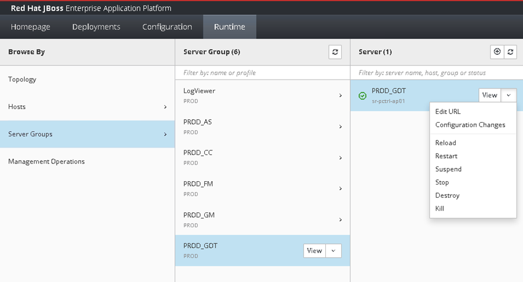

Módulos y versiones
| Módulo | Versión | WAR desplegar | Estado |
|---|---|---|---|
| mod-usuarios | 1.4.2 | ||
| mod-reportes | 2.0.1 |
1. Ingresar a la consola de administración de JBoss
Acceso inicial al panel de control del servidor JBoss EAP 7.4
-
Abrir el navegador web (preferentemente Chrome o Firefox en sus últimas versiones)
Detalles: Versiones mínimas soportadas: Chrome 85+, Firefox 78+
-
Ingresar a la URL de administración: https://jboss-admin.corp.cablevision.com.ar:9990
Detalles: Puerto 9990 para acceso administrativo
Advertencia: No utilizar HTTP, solo HTTPS

Figura 1: Pantalla de autenticación -
Ingresar credenciales de acceso:
Detalles: {"username": "admin_jboss_prod", "password_rules": "Complexity level 4 requerido"}
Nota: Las credenciales son personales e intransferibles
2. Navegación en la consola
Reconocimiento de la interfaz administrativa
-
Al ingresar correctamente, se mostrará el dashboard principal con:
- Estado de servidores
- Métricas de rendimiento
- Alertas activas
Figura 2: Vista general del dashboard -
En el menú lateral izquierdo ubicar las secciones principales:
- Runtime (Monitorización en tiempo real)
- Deployments (Gestión de aplicaciones)
- Configuration (Ajustes del servidor)
- Administration (Tareas administrativas)
3. Gestión de Server Groups
Administración de grupos de servidores para despliegues
-
Seleccionar la pestaña 'Runtime' en el menú principal
Figura 3: Menú de navegación -
Hacer clic en 'Server Groups' para ver los grupos configurados
Detalles: Los principales grupos son: PROD_FM, PROD_CC, PROD_GM
-
Para detener un grupo:
Advertencia: Verificar que no hay usuarios conectados antes de detener
 Figura 4: Detención de Server Group
4. Despliegue de aplicaciones
Procedimiento completo para deployar WARs
-
Navegar a la pestaña 'Deployments'

-
Deshabilitar la versión actual:

-
Cargar nueva versión:
Nota: El tamaño máximo permitido es 250MB
-
Habilitar el nuevo deployment:
5. Verificación post-despliegue
Validación del despliegue exitoso
-
Verificar en 'Runtime' > 'Server Groups' que:
- El estado sea 'Started'
- No haya errores en el log
- La versión mostrada sea la correcta
-
Realizar pruebas funcionales básicas:
- Acceso a URLs principales
- Pruebas de autenticación
- Operaciones críticas
6. Procedimiento de Rollback
Revertir a versión anterior en caso de fallos
-
Detener el Server Group afectado
-
Navegar a 'Deployments'
-
Deshabilitar la versión problemática
-
Habilitar la versión anterior estable
-
Reiniciar el Server Group
-
Documentar el incidente en el sistema de tickets